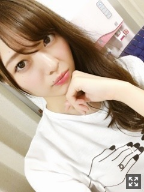
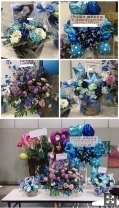
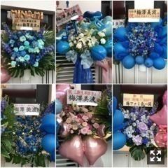
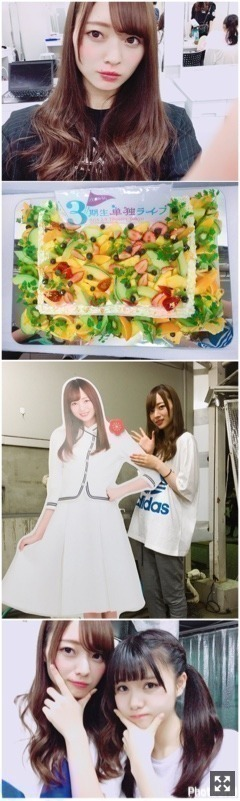
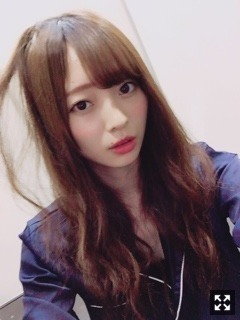

みんながいること。梅澤美波
みなさまこんにちは！！
乃木坂46 ３期生の
梅澤美波です！！
今日は文字だらけです
ごめんね

サイドまきまき(２日目
夜の散歩が好きだったんです
地元が田舎な方で
ちょっと歩けば田んぼばかりだったから
電灯がぽつぽつしかない道を歩くのがすきだったんです
建物もなくて
風通りもすごくいくて
私の落ち着く場所だったりしたの☺︎
久しぶりに行きたいなあ
この前の全握でね
バスの隣がたまみだったんだけど
寝てたら肩に頭コツンてしてきて
可愛すぎてキュンキュンした！
5月6日、7日に行われた名古屋の全握、個握
ありがとうございました！！
二日連続は初めてでめちゃくちゃわくわくしてたし
二日連続で皆様に会えるのって幸せ過ぎるね( ¨̮ )
全握はとてもとてもとても、
本当にたくさんの方が
すごくたくさん来てくださってね
本当に幸せでした。
ペアだった珠美もめちゃくちゃ仲良いから
凄いやりやすかったし楽しかったの☺︎
来てくださった方、本当にありがとう
めちゃくちゃ元気もらえるよいつも( ¨̮ )
そして個別握手会！！
いつもありがとうの方も
初めましての方もたくさんいて
地方に行くのって改めて楽しいなって思ったよ〜
いつもの方は遠くまで来てくれてありがとう
見慣れてる方がいると安心する！
初めましての方も来てくださって本当にありがとうございます（ ｉ _ ｉ ）
また待ってるね☺︎
お花もたくさん！！
本当にありがとうございます（ ｉ _ ｉ ）

幸せいっぱーい！！
そして！
終了しました。
あ、ちょっとしゃべりますね
来てくださった皆様、本当にありがとうございました。
楽しんでいただけたかなあ(；＿；)
握手会で当たらないよって言ってる方がすごく多くて、新聞にも取り上げていただいたように、すごくたくさんの応募があったと聞きました。
ああ、３期生はすごく期待していただいてるんだな〜って改めて思いました。
その分プレッシャーが凄くあったし
不安も沢山ありました。
全部自分達が作るってゆうのは
そんなに簡単なものではなくって
今まで見てる側だったのが
表舞台に立つ側の覚悟ってすごく必要だなって思ったんです
もちろん私達だけじゃ絶対にできなくて
私たちが表舞台で輝けるように
本当に本当にたくさんのスタッフさんが
動いてくださっているんです。
だからこそ絶対に成功させたいって思っていたし
できないんじゃなくて、
やればできるから、
できないならやればいいって
私はそう思って自分で動いてました。
苦手だったダンスをどう動いたら良く見えるか、とか。
人よりも背が高いし腕が長いから
すごくコンプレックスだったけど
舞台上なら上手くいかせるんじゃないかって思ったり。
やらないんだったらそこまでだし
そこで満足してるならそれ以上がれないし、
私はそれがいやだから、
努力することに無駄はないって信じて
全力で取り組んできた！
大切なのって本番だけじゃなくて
そこまでの過程だと思うから
自分の中でたくさん格闘したこの期間だったけど
すごく楽しくて幸せだった
失礼のないように過ごしてきたつもりだし、後悔しないように過ごせた！
私は全力でやり切りました。
胸張っていえる！！☺︎

お花たち。愛がたくさんつまってる！！
ありがとう、幸せ！！
皆にかっこいいところ見せたくて、
ただただ、成功させたいって想いで頑張った！
私のパフォーマンスを見て
何か伝わればいいな〜って思ってました。
きっと私を推してくださってる方は
ずっと見ててくれたかな？？
そう信じたい！！（笑）
あと、私を応援してくださってる方には
まだ恩返しができてないなって思っていて
めちゃくちゃ見にくい位置にいるのに
どこにいてもずっと見てるからねって
言ってくれる、
そんな皆さまが本当に大好きなんです
握手会とかでも、
いつもはふざけた話してても
たくさん握手券使って
上に上がってくにはどうしたらいいと思う？
って聞いてくれて一緒に考えてくれるんです。
その目標じゃ控えめすぎるよ
もっと絶対出来るよって
こんな私になんでそこまでしてくれるんだろうって思ってしまっていたけど
皆さまが応援してて絶対後悔させたくないから、私が目指す様な人でありたい！
自信持てるまで時間はかかるかもしれないけど、私は全力でこの活動してます。☺︎
言葉ではいくらでも言えるけど、
私は本当にファンの皆様が大切で仕方ないし、
何よりも握手会が本当に本当に大好きだし、
皆様が目を離せないくらいのアイドルになってやろうって思ってます
いつもありがとう( ¨̮ )
みんなが思ってるより
みんなが与えてくれるパワーって
本当に本当にめちゃくちゃ強くて何よりも私をやる気で震え立たせてくれるんだ( ¨̮ )
一緒に目指す場所までいけたらいいな
皆様の顔がめちゃくちゃよく見える
アイアシアターが大好き！
帰れて幸せだった！
今日が終わっちゃった寂しさがすごい
しばらく皆様の前でパフォーマンスすることがまた無くなるから
しかもあんなに近い距離で
８公演も。
でもまだまだ次を目指したい
応援よろしくお願い致します！！

１枚目は初日のわたし☺︎
２枚目は今日いただいたケーキ！！
美味しかった！！
３枚目は１人MCのために用意してくださった等身大パネル！！
私よりも４つも下なのに
こんなにしっかりしてて凄いなあって思うし、
たくさん悩んだけど
一緒に頑張れて本当に良かった！！
お疲れ様りりあ☺︎
最近りりあへの愛しさが止まらない( ¨̮ )
たくさん泣いたけど
その分たくさん笑ったし
すごく幸せな6日間でした。
ありがとうございました☺︎
またやりたい！！！
文字だらけでごめんね〜（ ｉ _ ｉ ）
コメント読んで眠りにつきます。
皆様ありがとう( ¨̮ )

握手会でした音符ちゃんヘアー
（笑）
次会える日までばいばい
またね
多くの人の１番になれなくても
皆様の視線の先の１番でいられますように
近くで会えるこの期間
たくさんパワーもらえたよ、ありがとう
また、次会えるまで
みんな〜、がんばろな
Original：https://www.nogizaka46.com/s/n46/diary/detail/38588?ima=0528&cd=MEMBER